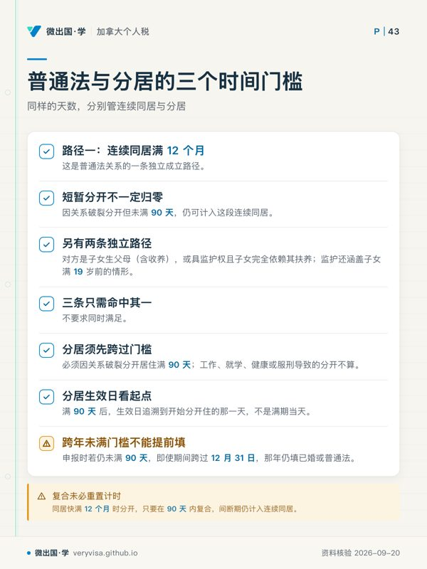
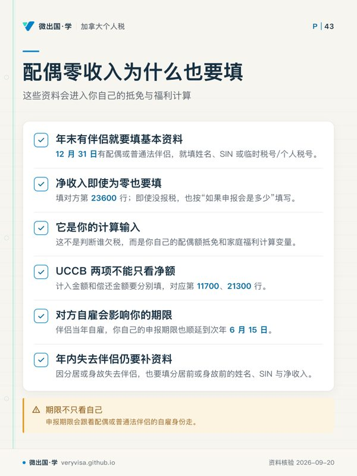
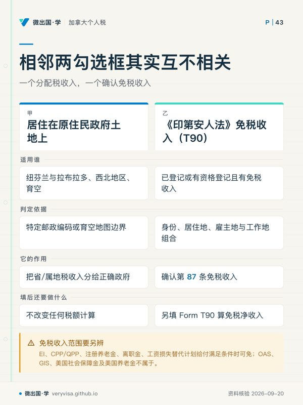
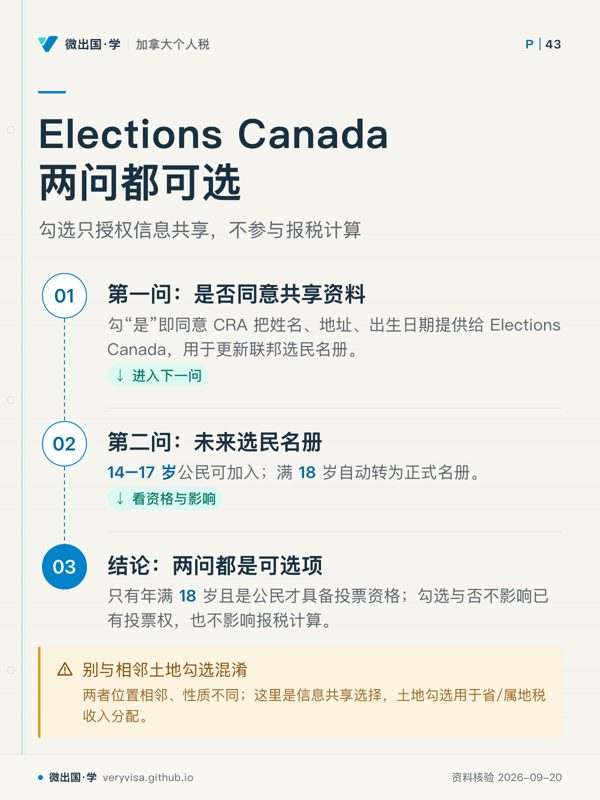

🃏 Flashcards · 3 闪卡 · 3 张 🖼 Slides · 6 幻灯 · 6 页 ✍️ Questions · 7 刷题 · 7 道
T1 个人所得税基础 T1 basics P2 稳住 P2 Hold steady
ZH EN ZH + EN
先看这一章怎么考 First, how this chapter is tested
婚姻状况法定分类与同居时间计算题：考查普通法伴侣12个月连续同居认定的具体时点，特别是同居期间不满90天的关系短暂破裂不中断计时的特殊规则。 Marital status and cohabitation timing: tests when the 12 months of continuous common-law cohabitation are counted, especially the special rule that a break of fewer than 90 days in the relationship does not interrupt the count. 分居成立条件与追溯生效日题：测试因感情破裂分居满90天的法定成立门槛，重点考查生效日期向前追溯至开始分开居住之日，而非满90天当天的时点规则。 Separation and retroactive effective date: tests the legal threshold that a separation due to relationship breakdown must last 90 days, with the effective date reaching back to the day the couple began living apart, not the 90th day. 配偶净收入填报与自雇连带申报期限题：考查12月31日有配偶时第23600行配偶净收入的填报义务（零收入亦须填报），以及配偶自雇对本人申报截止日（延至6月15日）的顺延效应。 Spouse net income and self-employed spouse deadline: tests the duty to report the spouse's net income on Line 23600 when there is a spouse on December 31 (even if it is zero), and how a self-employed spouse extends the taxpayer's own filing due date to June 15. 最常丢分的陷阱（看到题干信号就警觉） Traps that cost the most marks (watch for the signal in the stem)
分开即计时归零陷阱 Any break resets the clock 题干提及同居伴侣因争吵或关系短暂破裂分开居住数周或几十天（少于90天）后重新复合，询问同居满12个月的时点或婚姻状况认定。 The stem says the partners lived apart for a few weeks or a few dozen days (under 90) after a quarrel or short breakdown and then reconciled, and asks when 12 months of cohabitation is reached or what the marital status is. 分居生效日第90天陷阱 Separation effective on day 90 题干明确夫妻于某月某日因感情破裂开始分开居住且已持续满90天，询问分居正式生效的起始日期或年内申报状态。 The stem says a couple began living apart on a given date because of relationship breakdown and 90 days have passed, and asks for the date separation takes effect or the filing status for the year. 配偶零收入不报陷阱 Zero-income spouse need not be reported 题干强调纳税人已婚但配偶全年在海外或无任何收入且未报税，询问申报表第一步配偶信息及第23600行的填写规则。 The stem stresses that the taxpayer is married but the spouse was abroad or had no income and did not file, and asks about the spouse information in Step 1 and Line 23600. 本章考点页：导图、要点表、7 道带逐项解析的练习 →
核实日期：2026-10-30｜本页口径：2026 税年（2027 年 2–4 月申报） 。姓名、生日、婚姻状况这几栏看起来只是「填资料」，但六步申报表里至少四步的计算路径由它们分岔；本页只讲这一步，六步全景见《T1 申报全景》 。
很多人报税时会把《所得税与福利申报表》第一步——CRA 官方称之为「Identification and other information」（识别信息及其他信息）——当成走个过场，填完姓名、地址、SIN 就翻页算收入。这个假设是错的：这一步的每一栏答案，都会在后面几步的计算里被引用 。婚姻状况决定配偶额与几十项按「家庭净收入」核发的福利怎么算；居住省决定用哪张省表；海外财产那个框有没有勾对，决定 CRA 事后能追多少年；身故日期决定申报表要不要提前收尾。下面依次讲清怎么确定自己 12 月 31 日的法定婚姻状况，弄清配偶信息栏为什么「零收入也要填」，看懂海外财产 100,000 元 门槛背后的后果，以及居住省为什么按「12 月 31 日」而不是「住得最久的省」判定。
一、制度设计与底层逻辑：为什么身份信息要单独占一步 本节回答 This section answers 身份信息作为家庭算法输入的作用 How identification information works as input to family-based calculations
自评税制（self-assessment system，见《T1 申报全景》 ）要求纳税人自己算清收入、扣除、抵免，但这套计算从一开始就不是「个人对个人」的孤立运算——加拿大很多减税与福利制度，法律上锚定的单位是家庭 而不是个人 ：配偶或普通法伴侣的净收入会影响你能不能拿到配偶额抵免、能拿多少按「调整后家庭净收入」核发的福利。CRA 要先确定「这份申报表所在的家庭怎么构成」，才谈得上后面任何一项以家庭为单位的计算——这正是识别信息要单独占第一步的原因：它是所有下游计算共用的输入参数表 ，不是纯行政记录。
法律上，「婚姻状况」不是自由裁量的自我描述，而是《所得税法》给出的一组互斥定义，三条满足其一即成立普通法关系（详见第二节）。这组定义写得细，是因为它同时是授权的钥匙 （配偶额、家庭福利、配偶间资产转移的税务递延）和限制的闸门 （同一个家庭不能被两份申报表各自当作单身来重复申领本该按家庭合并计算的福利）。错报婚姻状况的法律后果不是小事：CRA 有权按新的婚姻状况重新核算已发放的福利并追回多发部分，情节严重时按未如实申报处理。
居住省信息背后是另一层制度设计：除魁北克外联邦统一征税，但省级税率、抵免、福利仍是各省立法权限，二者靠「12 月 31 日住在哪个省」这一个法律拟制的时间点对接，不按全年住得最久的省判断，把一个本可能很复杂的「按天数分摊」问题简化成单一事实判断。
海外财产申报（T1135）背后是国际税收信息不对称的老问题：CRA 无法像监控境内收入那样自动拿到境外账户信息，所以立法把举证责任放在纳税人身上——先自己申报持有了什么，CRA 再决定要不要核查 ，这也是为什么漏报的后果不是罚一次款那么简单，而是直接延长整份申报表的可复评窗口（见第二节）。
节末检索小测 · 先别往回翻，凭记忆作答 Quick recall check: answer from memory before scrolling back
In Canada's personal tax architecture, why does the CRA require 'Identification and other information' as the distinct first step of the T1 return rather than a mere administrative profile?
在加拿大个人税制架构中，为什么 CRA 将「识别信息及其他信息」列为 T1 申报表独立的初始第一步，而不仅是普通的行政档案记录？
a Because statutory income tax rates are based on demographic factors such as nationality and gender rather than taxable income. ✗ 错误。税率取决于应税收入水平，与国籍、性别等人口统计学特征完全无关。 Incorrect. Tax rates depend on the level of taxable income and have nothing to do with demographic traits such as nationality or gender.
b Because many credits and benefits are tied to the family unit, so these details feed every later family-based calculation. ✓ 正确。加拿大许多减税额（如配偶额）与现金福利（如 CCB、CGEB）法律上以家庭（family unit）为锚定单位，第一步识别信息（Identification and other information）是后续所有以家庭为单位运算的共用输入参数表。 Correct. Many Canadian tax credits (such as the spouse amount) and cash benefits (such as the CCB and CGEB) are legally anchored to the family unit; the first step, Identification and other information, is the shared table of inputs for all later family-based calculations.
c Because provincial governments require identity verification before granting federal filing software licenses to taxpayers. ✗ 错误。报税软件认证由联邦 CRA 统一管理，不存在省级政府事先核发许可的机制。 Incorrect. Tax software certification is managed centrally by the federal CRA; there is no mechanism for provincial governments to grant prior permission.
d Because completing this step legally permits the CRA to share personal banking records directly with financial institutions without prior authorization. ✗ 错误。填报识别信息不会授权 CRA 与金融机构随意共享纳税人的银行个人隐私。 Incorrect. Completing the identification information does not authorize the CRA to freely share a taxpayer's personal banking information with financial institutions.
看答案与每个选项的解析 Show the answer and why each option is right or wrong 答案 Answer ：b
二、2026 税年现行规则与数字 本节回答 This section answers 2026税年核心福利金额与家庭门槛 Core 2026 benefit amounts and family thresholds 本章考题 1 Question 1 本章考题 2 Question 2 本章考题 3 Question 3 本章考题 4 Question 4 本章考题 5 Question 5
2.1 婚姻状况：六种法定分类，判定时点是 12 月 31 日
CRA 官方列出的婚姻状况共六种 ：已婚（Married）、普通法同居（Living common-law）、丧偶（Widowed）、离婚（Divorced）、分居（Separated）、单身（Single） 。
图：普通法关系认定——三条满足其一即成立普通法关系
已婚 ：仅指与你有合法婚姻关系的人，不适用于同居但未登记的伴侣。普通法同居 ：与非法定配偶的人处于有性伴侣关系的同居状态，且满足以下任一条件——① 已连续同居满 12 个月（这 12 个月里如果因关系破裂分开且分开不满 90 天，仍算连续 ，不会把计时器归零）；② 对方是你子女的生父/生母（含收养）；③ 对方对你的子女拥有监护权（或该子女满 19 岁前一直由对方监护），且该子女完全依赖对方扶养。三条满足其一即成立普通法关系，不要求同时满足。分居 ：因关系破裂而分开居住满 90 天 才成立。关键的时点规则 ：一旦分开满 90 天，分居生效日不是第 90 天那一天，而是你们开始分开住的那一天 ——这条经常被算错方向。如果申报当时 90 天还没满且这段期间跨过 12 月 31 日，那一年的申报表上仍然要填已婚或普通法，不能提前填分居。非自愿分居 （如一方因工作、就学、健康原因或服刑而分开居住，并非感情破裂）不算这里说的分居，双方仍按已婚或普通法申报。丧偶／离婚／单身 ：分别指配偶或普通法伴侣已故、依法离婚、以及前五种都不适用的情形。
婚姻状况一旦在年内发生变化，法律要求在变化发生后的次月月底前通知 CRA；如果是变成分居，必须先等满 90 天才能通知 ，通知时用的生效日仍然是开始分开住的那一天，不是满 90 天那一天。CRA 会据此对已发放的家庭福利重新核算，多退少补。
⚠️
「同居快到 12 个月就分手又复合」不会归零
普通法关系认定的 12 个月只要求「连续」，而这条规则里的「连续」明确允许一次不满 90 天 的分居间断——很多人以为分开哪怕一天就要从零重新计时，其实只要复合发生在分开 90 天以内，中间这段间断期照样计入 12 个月的连续同居时间。
2.2 配偶或普通法伴侣的信息：为什么零收入也要填
只要你在 12 月 31 日有配偶或普通法伴侣，申报表第一页就要求填写对方的名字、SIN（或临时税号/个人税号），以及对方 2026 年度的净收入（第 23600 行，即使对方没报税、即使是零，也要填「如果他们报了会是多少」） 。这条规则常被误解成「反正对方没收入就不用填」，但这个数字不是用来判断谁欠税，而是计算你自己配偶额抵免与各类家庭福利的输入变量——没有它，你的很多计算都算不出来。还要填对方的全民托儿津贴（UCCB）计入金额与偿还金额（对方申报表第 11700、21300 行），因为 CRA 计算部分抵免与福利时会分别加回或扣除，不能只填一个净收入数字了事。此外要勾选对方是否自雇：配偶或普通法伴侣当年自雇，你自己的申报期限也顺延到次年 6 月 15 日 ——期限跟着对方身份走，不是只看自己。年内因分居或配偶身故而失去配偶的，仍要填对方分居前或身故前 的姓名、SIN 与净收入，用于计算可能仍适用的相关抵免。
2.3 居住省与居住信息：按 12 月 31 日这一天，不按住得最久的省
「居住信息」一栏要填四件事：① 12 月 31 日当天居住或被视为事实居民（factual resident）的省或属地——唯一决定你用哪张省表（Form 428）的字段 ；② 目前实际居住地若与通讯地址所在省不同，另填目前居住省，供核算省级福利；③ 若 2026 年自雇，填生意在哪些省有固定营业场所；④ 若 2026 年内成为或不再是加拿大税务居民，填入境或离境日期。判定基准是「那一天」，不是全年累计天数 ——3 月还在阿尔伯塔、12 月 20 日刚搬到 BC 的人，居住省填 BC，省税与省级抵免全按 BC 规则算，即使全年住阿尔伯塔的时间更长。
2.4 海外财产（T1135）：100,000 元 是成本额门槛，不是市值门槛
如果你在 2026 年度任何时刻 持有的「特定海外财产」总成本额 （cost amount，通常即税法上的调整后成本基础，不是公允市场价值）超过 100,000 元 ，申报表要勾选「是」并另填 Form T1135 。门槛按「多项财产成本额合计」计算，不是逐项各自判断——海外银行存款 $35,000 加境外公司股份 $75,000，合计 $110,000 就要报，即使单项都不到 100,000 元。个人首次成为加拿大税务居民的税年免交 T1135，但仍须按居民期间的收入申报规则报境外收入；再次回流不自动重获首次居民豁免。特定海外财产不含个人自用财产（度假屋、艺术品等）、加拿大注册账户内的海外资产（TFSA/RRSP/RRIF/RPP/PRPP 一律免报）与经营性主动业务财产。申报截止日与本人申报表相同（4 月 30 日，配偶/普通法伴侣任一方当年自雇则延至 6 月 15 日）。
✕
漏报或错报海外财产，追溯期直接多 3 年
当年未申报指定海外财产收入，且 T1135 未按时提交或含虚假陈述/遗漏时，CRA 对该税年的正常复评期限通常再延长 3 年。普通迟报罚为每日 $25，最低 $100、最高 $2,500；故意或重大疏忽不报，每月 $500、最多计 24 个月，合计最高 12,000 元；收到 CRA 提交要求后仍不履行，每月 $1,000、最多计 24 个月，合计最高 24,000 元（ITA s.162(10)）。升级月罚以及超过 24 个月触发的成本额 5% 罚款，都要按相应规则减去已课罚款；不是无条件层层相加。5% 针对某税年的持续漏报只征一次，不是每过一年再征一次（Government of Canada（论坛解读） 、CRA（论坛解读） ）。
2.5 Elections Canada 与「居住在原住民政府土地上」两个易混的勾选框
申报表上还有两处经常被混为一谈、实际互不相关的勾选：
Elections Canada 同意 ：勾选「是」即同意 CRA 把姓名、地址、出生日期提供给 Elections Canada 更新联邦选民名册；14–17 岁公民还可加入「未来选民名册」，满 18 岁自动转正式名册。这两问都是可选项 ，只有年满 18 岁且是公民才具备投票资格，勾选与否不影响已有投票权，也不影响报税任何计算。
「居住在原住民政府土地上」 ：只适用纽芬兰与拉布拉多、西北地区、育空 三地居民，确认是否居住在与联邦签有「原住民政府个人所得税协议」的结算土地内（判定依据是特定邮政编码或育空的地图边界），作用是把对应省/属地税收入分配给正确的原住民政府——与下面的《印第安人法》免税勾选是完全不同的两件事 ，很容易混淆。
2.6 《印第安人法》免税收入勾选（T90）
如果你是根据《印第安人法》（Indian Act）已登记或有资格登记的身份人士，且当年有依第 87 条免税的收入（该条豁免坐落在保留地上的个人财产 ，收入是否免税还要看登记身份、居住地、雇主所在地与实际工作地点几个因素的组合），申报表上要勾选相应的框，并另填 Form T90, Income Exempt From Tax Under the Indian Act 计算免税净收入。EI、CPP/QPP 给付、注册养老金给付、离职金、工资损失替代计划给付等就业相关收入在满足条件时可以免税；OAS、GIS、美国社会保障金及美国养老金则不属于 这项豁免。即使全部收入免税，仍建议每年申报 ——CCB、CGEB、残障税收抵免等几乎所有现金福利的前提都是「已提交申报表」，免税不等于不用报。
2.7 婚姻状况怎么联到「按家庭净收入」核发的福利：三列表
婚姻状况一旦确定，配偶净收入就会并入「调整后家庭净收入」，直接决定几十项福利的核发金额与递减节奏。以 Canada Child Benefit（CCB，6 岁以下基础额与第一递减门槛）与已更名的 Canada Groceries and Essentials Benefit（CGEB，前称 GST/HST credit，成人上限）为例：
三行均按福利期取值，通常以福利期开始前一年的申报收入计算；例如 2026-07 至 2027-06 通常用 2025 税年收入。2026 税年收入通常影响 2027-07 起的福利期，不能把本表金额当成该未来福利期的已公布值。各项计算公式不同，CGEB 还叠加了 2026-07 的立法增额；具体是哪部法案、哪一天生效，见 《2026 年度数字总表》 。这张表要传达的核心是 ：婚姻状况填错一天、配偶净收入填错一个数字，这几十项福利的核发金额会跟着连锁错算，而这些计算全部发生在识别信息之后的步骤里，起点就是第一步。
节末检索小测 · 先别往回翻，凭记忆作答 Quick recall check: answer from memory before scrolling back
For the July 2026 to June 2027 benefit period (generally based on 2025 income), what is the maximum adult amount of the Canada Groceries and Essentials Benefit (CGEB), formerly the GST/HST credit?
对于 2026 年 7 月至 2027 年 6 月的福利期（通常按 2025 税年收入计算），加拿大民生补贴（CGEB，原 GST/HST credit）的成人最高额是多少？
a $340, the adult maximum carried over unchanged from earlier periods ✗ 错误。$340 是 2024-07 至 2025-06 福利期的成人上限，不是本期数值。 Incorrect. $340 was the adult maximum for the July 2024 to June 2025 benefit period, not for this period.
b $349, with the 25% increase paid later as a separate lump sum ✗ 错误。$349 是 2025-07 至 2026-06 福利期的上限；25% 增额已经计入本期上限，不是另行一次性发放。 Incorrect. $349 was the maximum for the July 2025 to June 2026 benefit period; the 25% increase is already included in this period's maximum and is not paid separately as a lump sum.
c $445, which already includes the 25% legislated increase ✓ 正确。讲义三列表：2026-07 至 2027-06 福利期 CGEB 成人上限 $445，含 25% 增额。同表 6 岁以下 CCB 基础额为 8,157 元。 Correct. The lecture's three-column table gives the CGEB adult maximum for the July 2026 to June 2027 benefit period as $445, including the 25% increase. The same table gives the CCB base amount for a child under 6 as $8,157.
d $436, the prior maximum indexed upward by 25% for inflation ✗ 错误。$436 是凭空推算的数；25% 是立法增额，不是通胀指数化，且讲义给的本期上限是 $445。 Incorrect. $436 is a made-up figure; the 25% is a legislated increase, not inflation indexing, and the lecture gives $445 as this period's maximum.
看答案与每个选项的解析 Show the answer and why each option is right or wrong 答案 Answer ：c
三、实务流程：这一步怎么填、CRA 收到后怎么用 本节回答 This section answers 已故人士申报与电子通知选择规则 Returns for deceased persons and the rules for choosing electronic notices
首次申报的人，识别信息必须与 SIN 记录完全一致；还没有 SIN 的新移民或临时居民先向 Service Canada 申请 SIN，暂时没资格获得 SIN 的申请个人税号（ITN）用于报税——多数电子申报系统要求填入有效 SIN 才能提交。首次报税还牵动另一件事（见《T1 申报全景》 3.2 节）：CRA user ID 或银行登录通常需要最近两年内已评税申报的数据；但 BC/Alberta 居民可通过省级合作登录，在首次报税前注册（CRA（论坛解读） ）。
如果本次申报的对象是已故人士，识别信息一律填逝者本人的资料，不是遗产执行人或家属的资料；逝者的最终申报期限见《T1 申报全景》 2.3 节——对某一待报年度，死亡发生于该年10月之后至原申报截止日之间，取原期限与死亡后6个月较晚者；次年申报期内死亡也可能影响上一年度期限。
电子邮件地址是可选栏位，勾选同意后 CRA 会推送账户变更与新邮件到达通知，但通知本身不含内容，且一旦选用电子通知，符合条件的纸质信件将不再邮寄，邮件本身不加密、可能被截获或篡改。语言偏好（英文/法文）决定 CRA 后续信函与电话服务用语，可随时变更，不影响任何计算。
节末检索小测 · 先别往回翻，凭记忆作答 Quick recall check: answer from memory before scrolling back
When preparing a T1 return for an individual who passed away during the tax year, how should the Identification section be completed, and what is the consequence of registering an email address for CRA correspondence?
为税年内去世的个人编制 T1 申报表时，识别信息部分应如何填写，且在税表中登记电子邮件以接收 CRA 通知会有何后果？
a Identification must contain the deceased taxpayer's personal details, and registering an email means paper notices will no longer be mailed for eligible correspondence. ✓ 正确。讲义明确规定：已故人士申报表的识别信息一律填逝者本人资料而非执行人资料；选用电子通知后符合条件的纸质信件将不再邮寄，邮件通知本身不含敏感内容。 Correct. The lecture states that identification on a deceased person's return is always the deceased person's own details, not the executor's; after electing electronic notices, eligible paper letters are no longer mailed, and the email notification itself contains no sensitive content.
b Identification must state the estate executor's personal SIN and name, and registering an email requires CRA to send encrypted tax assessments via PDF attachment. ✗ 错误。识别信息填逝者而非执行人；CRA 的邮件通知仅提示有新消息到达，不发送任何含纳税内容的附件。 Incorrect. Identification shows the deceased, not the executor; the CRA email notification only alerts the person that a new message has arrived and sends no attachment containing tax content.
c Identification requires a joint entry of both the deceased and all legal heirs, and email registration provides immediate real-time telephone support priority. ✗ 错误。报税表不填报继承人名单，提供电子邮件也不会赋予纳税人电话支持优先权。 Incorrect. The return does not list the heirs, and providing an email address does not give the taxpayer priority for telephone support.
d Identification must leave the SIN field blank until probate is completed, and email registration is legally compulsory for all estate filings. ✗ 错误。必须填写逝者本人的有效 SIN，且电子邮件地址始终是可选栏位（optional field）。 Incorrect. The deceased person's own valid SIN must be entered, and the email address is always an optional field.
看答案与每个选项的解析 Show the answer and why each option is right or wrong 答案 Answer ：a
四、联邦之外：BC 这条怎么走 本节回答 This section answers BC居民跨省搬迁与省表结算规则 BC residents, moves between provinces, and how the provincial form is settled
BC 和除魁北克外的其他省属地一样，不单独征收个人所得税，居住省信息填好后，联邦与省两级税就在同一份申报表里通过 Form 428 一并算出。BC 居民只要如实填好 12 月 31 日的居住省，后面步骤会自动套用 BC 税率与省级非退还抵免 。真正容易出错的是跨省搬迁：年底前后从阿尔伯塔搬来 BC 的人若按「住得更久的省」而非 12 月 31 日当天填，会直接用错省表——两省税阶结构、抵免额都不同，用错不是格式问题，是实打实算错税额。西北地区、育空、纽芬兰与拉布拉多居民另需留意第 2.5 节「原住民政府结算土地」，BC 居民不适用这一项。
节末检索小测 · 先别往回翻，凭记忆作答 Quick recall check: answer from memory before scrolling back
An individual lived and worked in Alberta from January until December 10, 2026, when they relocated to British Columbia for a new job. Which provincial tax calculation rules apply on their 2026 federal T1 return?
某纳税人于 2026 年 1 月至 12 月 10 日期间在阿尔伯塔省生活和工作，随后因新工作搬迁至 BC 省并在当地定居。该纳税人的 2026 年联邦 T1 申报表应如何适用省税计算规则？
a The taxpayer must calculate 11 months of Alberta provincial tax and 1 month of BC provincial tax based on days lived. ✗ 错误。个人所得税不按跨省居住天数或月数进行比例分摊。 Incorrect. Personal income tax is not prorated by days or months of residence in different provinces.
b Because the taxpayer resided in BC on December 31, 2026, all provincial tax is calculated entirely under BC Form 428 within the single T1 return. ✓ 正确。BC 与除魁省外的其他省份一样不单独征税；居住省按 12 月 31 日这一天单一事实确定，全年在同一份 T1 申报表中通过 BC Form 428 套用 BC 税率与抵免计算省税。 Correct. Like other provinces except Quebec, BC does not collect its own return; the province of residence is fixed by the single fact of December 31, and for the whole year BC tax rates and credits are applied through BC Form 428 on the same T1 return.
c The taxpayer must file an Alberta Form 428 with CRA and submit a separate standalone provincial return directly to the BC Ministry of Finance. ✗ 错误。BC 省税由 CRA 统一征收，无需且不存在单独向 BC 财政厅申报的个人税表。 Incorrect. BC provincial tax is collected by the CRA, and there is no separate personal return filed with the BC finance ministry.
d The taxpayer is exempt from BC provincial tax for 2026 because their primary annual income was earned in Alberta. ✗ 错误。省税管辖权取决于年底居住省，收入在阿尔伯塔赚取并不免除 12 月 31 日定居 BC 的纳税人缴纳 BC 省税的义务。 Incorrect. Provincial tax jurisdiction depends on the province of residence at year end; income earned in Alberta does not exempt a taxpayer who settled in BC on December 31 from BC provincial tax.
看答案与每个选项的解析 Show the answer and why each option is right or wrong 答案 Answer ：b
五、历史变革：从纸质核对到按家庭计算的现代福利体系 本节回答 This section answers T1135两档申报与家庭福利历史演变 The two T1135 reporting levels and how family benefits evolved
婚姻状况栏本身的六分类结构近年没有变化，变化更大的是「以家庭净收入核发福利」这套机制的扩张：CCB 在 2016 年取代加拿大儿童税收福利（CCTB）与全民托儿津贴（UCCB）；GST/HST credit 在 2026 年 7 月改名为 CGEB 并临时增额 25%（详见 《2026 年度数字总表》 ），计算方法与所需的家庭净收入输入完全沿用旧制。福利的名字、金额几乎每年都在变，但共用的输入端——婚姻状况与配偶净收入——多年未变 ，这正是本页重点在「怎么正确填」而不是「今年金额是多少」的原因。
海外财产申报制度自 2013 税年起新增「未申报即延长复评期」的规则；2015 年起新增两档报送方式（有申报义务且全年成本额始终低于 250,000 元 时，可选择简化的 Part A；任何时点达到或超过 250,000 元 就须用 Part B 详细申报），降低了合规成本，但门槛与法律后果没有放松。
节末检索小测 · 先别往回翻，凭记忆作答 Quick recall check: answer from memory before scrolling back
How did Form T1135 reporting change to ease the burden on filers, and what role does the $250,000 cost level play?
Form T1135（海外财产申报表）的报送方式怎样调整以减轻申报负担？$250,000 这个成本额在其中起什么作用？
a The filing threshold was raised from $100,000 to $250,000, so assets under $250,000 need no disclosure. ✗ 错误。申报门槛始终是 $100,000，从未整体上调至 $250,000。 Incorrect. The filing threshold has always been $100,000 and was never raised overall to $250,000.
b Since 2015, filers whose total cost stays under $250,000 may use simplified Part A; at or above it, Part B. ✓ 正确。讲义第五节：2015 年起新增两档报送方式——有申报义务且全年成本额始终低于 250,000 元，可选简化的 Part A；任何时点达到或超过 250,000 元须用 Part B 详细申报。 Correct. Section 5 of the lecture: since 2015 there are two reporting methods. A filer with a filing obligation whose total cost stayed under $250,000 throughout the year may use the simplified Part A; if the cost was $250,000 or more at any time, detailed Part B reporting is required.
c Form T1135 was merged into the principal residence declaration form, removing separate offshore penalties entirely. ✗ 错误。T1135 仍是完全独立的海外财产申报表，且保留了严厉的法定迟报罚款。 Incorrect. T1135 remains a fully separate foreign property reporting form and retains its strict statutory late-filing penalties.
d All individual reporting was eliminated in 2016 and replaced by direct automatic information exchange with foreign banks. ✗ 错误。纳税人自行申报的法定责任依然存在，并未被自动化交换取代。 Incorrect. The taxpayer's own statutory duty to report still exists and has not been replaced by automatic information exchange.
看答案与每个选项的解析 Show the answer and why each option is right or wrong 答案 Answer ：b
六、案例 本节回答 This section answers 案例场景下同居中断与海外资产判断 Cohabitation breaks and foreign asset judgments in the case scenarios
案例一：素里的一对情侣——12 个月怎么数（示例）
素里一对情侣 2025 年 3 月起同居，2025 年 11 月因争执分开住了 50 天后又复合。到 2026 年 3 月，同居满 12 个月了吗？中间那 50 天因为不满 90 天 ，仍算作连续同居的一部分，不会把计时器归零——他们在 2026 年 3 月即满足普通法伴侣的 12 个月条件，申报时应勾选「普通法同居」而不是继续填「单身」。误以为分开就要重新数 12 个月，会多报近一年「单身」状态，影响的正是配偶净收入相关的抵免计算。
案例二：列治文一个家庭的海外账户——$75,000 加 $35,000 为什么要报（示例）
列治文一个家庭，太太名下在香港有一个成本额 $75,000 的股票账户，先生名下在英国有一个 $35,000 的银行存款，两人各自单独看都没到 100,000 元，觉得都不用报。但 T1135 的判断单位是个人 总持有的特定海外财产成本额，不是单一账户——如果先生名下同时还持有一笔 $70,000 的海外基金，$35,000 加 $70,000 已超过 100,000 元，先生本人就要报，太太的账户则单独判断她自己是否达标。最容易搞混的地方是把「按家庭合并」和「按个人合并」弄反 ：门槛是每个申报人自己名下财产成本额相加，不是夫妻合并，也不是逐个账户单独判断。
案例三：温哥华一位有身份的原住民纳税人——免税不等于不用报（示例）
温哥华一位已登记的原住民纳税人，在保留地上的雇主处工作，收入依《印第安人法》第 87 条免税，多年觉得「反正不交税，报不报无所谓」而没有报税。结果是：他因此错过了这几年的 CCB 与现行 CGEB 核发资格——这些福利的前提是「已提交申报表」，不是「有应纳税收入」 ，免税收入同样要通过 T90 计算净额并随申报表提交，才能进入核算福利的输入池。等他补报，能追溯申领的部分福利也因追溯期限打了折扣。
节末检索小测 · 先别往回翻，凭记忆作答 Quick recall check: answer from memory before scrolling back
In the chapter's illustrative cases, why did the couple in Surrey qualify as common-law partners despite having a 50-day separation during their first year of cohabitation?
在本章的示范案例中，素里的那对情侣在同居第一年内经历了 50 天的分开居住，为什么仍然被认定为成立普通法伴侣关系？
a Because a break of under 90 days does not reset the 12-month cohabitation clock under federal tax rules. ✓ 正确。讲义案例一明确说明：因感情破裂分开居住不满 90 天（50天）复合的，仍算作连续同居的一部分，不会将 12 个月的同居计时器归零。 Correct. Case 1 in the lecture explains that a separation of under 90 days (50 days) due to relationship breakdown followed by reconciliation still counts as part of continuous cohabitation and does not reset the 12-month cohabitation clock.
b Because common-law status is established automatically on the 180th day of cohabitation regardless of interruptions. ✗ 错误。税法规定的基础同居时限是连续 12 个月，不存在 180 天的法定规则。 Incorrect. The basic cohabitation period in the tax rules is 12 continuous months; there is no statutory 180-day rule.
c Because provincial family law in BC immediately overrides the federal Income Tax Act whenever couples rent a property jointly. ✗ 错误。联邦所得税目的下的婚姻状况严格依《所得税法》定义判定，省级家庭法并不在此处自动覆盖联邦税法。 Incorrect. Marital status for federal tax purposes is determined strictly by the Income Tax Act definitions; provincial family law does not automatically override the federal tax law here.
d Because separations occurring within the first six months of cohabitation are legally deemed null and void. ✗ 错误。税法中不存在所谓前六个月内分居无效的规定。 Incorrect. The tax rules have no provision that a separation in the first six months of cohabitation is invalid.
看答案与每个选项的解析 Show the answer and why each option is right or wrong 答案 Answer ：a
七、常见错报与自查清单 本节回答 This section answers 原住民结算土地与免税勾选本质差异 The essential difference between settlement lands and the tax-exempt checkbox
把「分开一天就重新计时」当作普通法 12 个月的规则 ——识别：只有分居满 90 天 才会真正中断连续同居的计时，不满 90 天的间断仍计入 12 个月。配偶零收入就不填对方净收入栏 ——识别：只要 12 月 31 日有配偶或普通法伴侣，对方净收入（哪怕是零）都必须填写，这是计算你自己抵免与家庭福利的必要输入。居住省按「全年住得最久」而不是按 12 月 31 日填 ——识别：只看 12 月 31 日当天你实际居住或被视为事实居民的省份，年内搬迁不影响这条判断规则。把 T1135 的 100,000 元 门槛当作按家庭合并计算 ——识别：门槛是每个申报人自己名下特定海外财产成本额相加，不是夫妻合计，也不是逐项单独判断。把 T1135 的成本额门槛误当市值门槛 ——识别：判断标准是成本额（通常即调整后成本基础），不是财产当前的公允市场价值，二者在增值资产上差异可能很大。误以为免税收入不用报税 ——识别：《印第安人法》免税收入需要通过 T90 计算净额并随申报表一并提交，不报会直接影响 CCB、CGEB 等福利资格的核算。把「原住民政府结算土地」勾选与《印第安人法》免税勾选混为一谈 ——识别：前者只适用纽芬兰与拉布拉多、西北地区、育空三地居民，决定省/属地税收入怎么在联邦与原住民政府之间分配；后者决定收入本身是否免税，两者互不影响。
节末检索小测 · 先别往回翻，凭记忆作答 Quick recall check: answer from memory before scrolling back
According to the chapter's checklist of common filing errors, what is the fundamental legal difference between the 'Residing on Indigenous government lands' checkbox and the Indian Act Section 87 tax exemption?
根据本章常见错报与自查清单，询问是否「居住在原住民政府土地上」的勾选框与《印第安人法》第 87 条免税申报之间有何根本法定区别？
a The former determines whether personal income is fully exempt, while the latter determines whether provincial sales tax is refunded. ✗ 错误。两项勾选均不用于判定省销售税退税。 Incorrect. Neither checkbox is used to determine provincial sales tax refunds.
b The former is an optional survey question, while the latter is only available to non-resident foreign nationals. ✗ 错误。前者是法定税务归属问题而非调查问卷，后者仅针对有身份的原住民，非外国公民。 Incorrect. The former is a statutory tax-attribution question, not an optional survey, and the latter is only for status Indigenous persons, not foreign nationals.
c The former applies only in NL, NT and YT to share tax revenue; the latter exempts reserve-situated property, via Form T90. ✓ 正确。讲义清单第7项强调：「居住在原住民政府土地上」仅适用纽芬兰与拉布拉多、西北地区、育空三地居民，用于在政府间分配税收；而《印第安人法》第 87 条免税适用于全国符合资格者，通过 Form T90 计算免税净额以确保按家庭核发的福利不受影响。 Correct. Checklist item 7 stresses that 'residing on Indigenous government settlement lands' applies only to residents of Newfoundland and Labrador, the Northwest Territories and Yukon, to share tax revenue between governments; while the section 87 Indian Act exemption applies nationwide to eligible persons, with the exempt net amount calculated on Form T90 so that family-based benefits are not affected.
d Both checkboxes achieve identical tax outcomes and selecting either one automatically eliminates all federal and provincial tax liabilities. ✗ 错误。两者的法律功能完全互斥且目标不同，不能随意混淆或相互替代。 Incorrect. The two checkboxes have entirely different legal functions and purposes; they cannot be confused or substituted for each other.
看答案与每个选项的解析 Show the answer and why each option is right or wrong 答案 Answer ：c
术语双语表
来源
Canada Revenue Agency, "Marital status"（CRA（论坛解读） ）
Canada Revenue Agency, "Questions and answers about Form T1135"（CRA ）
Canada Revenue Agency, "Table of penalties"（CRA（论坛解读） ）
Canada Revenue Agency, "Federal income tax and benefit information for 2025"（5000-G，Step 1 明细）（CRA ）
Canada Revenue Agency, "Elections Canada"（CRA（论坛解读） ）
Canada Revenue Agency, "Determine whether you live on Indigenous government lands"（CRA（论坛解读） ）
Canada Revenue Agency, "Taxes and benefits for Indigenous Peoples"（CRA ）
Canada Revenue Agency, "Your province or territory of residence"（CRA（论坛解读） ）
Canada Revenue Agency, "Indexation adjustment for personal income tax and benefit amounts"（CRA ）
Canada Revenue Agency, "GST/HST credit"（CRA ）
Canada Revenue Agency, "Canada Groceries and Essentials Benefit"（CRA ）
CRA 账户注册及省级登录例外：Register for a CRA account（论坛解读） ，核于2026-09-08。
本页知识卡 不看正文也能拿到这一节的核心内容：先看导读，再看图。点图放大，左右翻页。
放大 ⤢ 年末当天的法定状态决定所填类别。 先看 先看左栏定义，再用右栏排除容易混淆的情况。易漏 变成分居要先满 90 天 才能通知，生效日仍追溯到开始分开住那天。下一步 去知识卡，核对你在年末当天的实际状态。详情与分享 → 
放大 ⤢ 普通法与分居共用天数概念，但用途不同。 先看 先分清普通法计时、短暂分开、正式分居是三件事。易漏 “分居成立日”和“满门槛日”不是同一天。下一步 去练习，用一条跨年时间线判断应填哪种状态。详情与分享 → 
放大 ⤢ 伴侣零收入也可能影响你的抵免和福利。 先看 先把伴侣身份、收入和自雇状态分开核对。易漏 对方没报税也不能留空净收入栏。下一步 去讲义，对照伴侣资料和自雇状态逐项补齐。详情与分享 → 放大 ⤢ 省表只跟年末当天的居住省走。 先看 先找决定省表的字段，再看其余三类居住信息。易漏 看年末落在哪省，不比较全年各省停留时长。下一步 去练习，用一次年末搬家案例判断应填哪个省。详情与分享 → 
放大 ⤢ 土地分配勾选与免税勾选是两套规则。 先看 先看适用人群：一个管税收分配，一个管收入免税。易漏 即使全部收入免税，仍建议每年申报；CCB 等现金福利以已申报为前提。下一步 去讲解，带身份、住址、雇主地和工作地逐项核对。详情与分享 → 
放大 ⤢ 这两问只管名册信息，不管税表金额。 先看 沿三步看：共享什么、谁能进未来名册、最后影响什么。易漏 这两问不参与任何计算，别为它们改别的字段。下一步 去练习，只判断哪些字段会进入税额计算。详情与分享 → 本站依据官方原文自撰 · 出处见正文链接